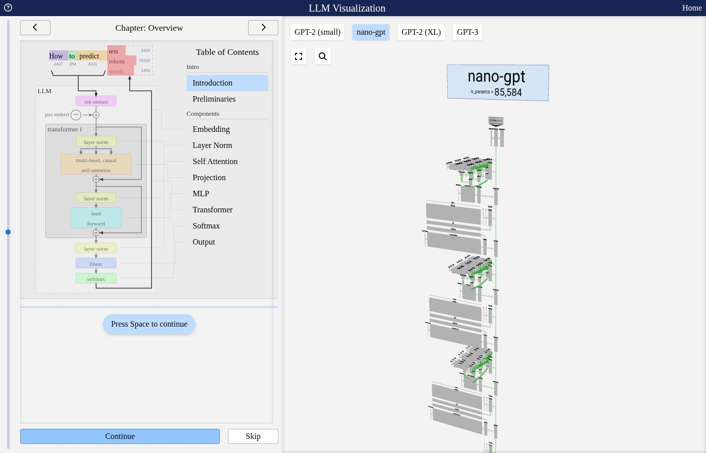

A breakdown of LLMs (a somewhat not disastrous attempt)
LLMs are a truly hot topic today, companies are basically valued at some trillions of dollars for them. Regardless of this, the mechanism behind them is quite fascinating, and I wanted to try and break it down for a while now. I will mostly follow Karpathy’s 3.5h long video, Deep Dive into LLMs like ChatGPT, but in my style, and it will be shorter to read than 3.5h. I will not go into the maths of the neural network, I will do a separate article for that and leave references on where to learn it when we get to it.
A lot of the examples and drawings are from Karpathy’s video and his Excalidraw. If you have enough time, he teaches it much better than me, but this is a bit more straightforward.
The main idea is the following: we want to be able to give a machine some text, and for it to respond in the best way possible to us. Now, “the best way” is a bit ambiguous, and it is that way on purpose, in fact each lab decides what best means. But for this little exercise, let us say that we want it to respond in the way we would expect another human to answer the question, with all the context that statement involves (this means that when we ask a math question, we want it replied right, but if we are sarcastic we want the LLM to pick that up and not simply do maths, and every human-like behaviour that we can think of).
pretraining: the data
To achieve this, the first part is called pretraining. We need loads of data, a ton of data, of text. The best source to get this is the internet, it has quite a bit of text as you might expect, but we shall get that text in some concrete steps/form.
Each lab may have its own internet dataset. For a playground example, we may use FineWeb, an open source internet dataset focused on the English language. After all the filtering, the dataset is only about 44TB of disk space (the version Karpathy shows in the video), and that is before converting words to tokens, which we will explain in a minute. Besides this, text is a data-type that does not consume much space, video for instance is way worse.
Before getting into that though, what we do is filter out what we don’t want. For FineWeb, that is text that is not mostly in English (they run a language classifier on every page and only keep it if its English score is at least 0.65). Moreover, we block other things such as adult sites and everything we don’t want in our model. There are also other things, like the fact that our computer sees the whole webpage with HTML, so we filter out the code and simply get the text. In the end our dataset in natural language looks like this:
A sketch of the FineWeb page on Hugging Face. The rows are real (the first rows of the dataset, text cut short): each one is one cleaned-up web page, with its id, the Common Crawl snapshot (“dump”) it came from, its url and the crawl date. The dataset has kept growing: the page now lists 54.8 TB.
from text to tokens
Getting a chunk of text from it, we can now understand what transformation the text goes through to finally be represented in what will be our model. Starting from:
Great decorating addition
I have a grape/Italian theme in my kitchen. I purchased 5 of these. I decided to use them to put around my pull knobs on my overhead cabinets. Now I am ordering more to sprinkle around in other places in the kitchen - even to hang up via suction cups on my white kitchen tile.
September 20, 2012
One real row of FineWeb (321 bytes), originally from www.yankeecandle.com, crawled in CC-MAIN-2013-20. Its language score is 0.93, so it passed the English filter.
Just “Great decorating addition” in bits (UTF-8): 200 zeros and ones. The whole chunk above is 2,568 bits long.
Now this presents a problem, which is that the representation is a very long sequence, and we would preferably want to minimize this. Hence we can convert these bits to shorter representations but with more symbols. For instance we can use sequences of 8 bits, call them bytes, and use numbers 0 to 255 (28, since we have 2 options for each position in the 8-bit sequence) to represent each one of these sequences:
The most common pair of bytes in this chunk is 110 32, which is “n” followed by a space (the end of words like “in”, “on”, “kitchen”). It shows up 10 times, so we can replace it with a single new symbol, say 256, and the sequence gets 10 numbers shorter.
and then give a symbol to that chunk. After a lot of these tricks (each lab will have their own), we will have our tokenization, our identifiers for each chunk of text. For instance we can go to tiktokenizer and give an example:
cl100k_base · 18 tokens
I have a grape/Italian theme in my kitchen. I purchased5 of these.40, 617, 264, 52252, 14, 70211, 7057, 304, 856, 9979, 13, 358, 15075, 220, 20, 315, 1521, 13
hello world15339, 1917
Hello World9906, 4435
hello world15339, 220, 1917
HELLO WORLD51812, 1623, 51991
Same view as tiktokenizer with the cl100k_base tokenizer (GPT-4’s), rendered here with OpenAI’s tiktoken library. Each colored chunk is one token; the numbers are their IDs. Bottom: changing the case or adding one extra space gives completely different tokens.
Note that it is super sensitive: lowercase, uppercase, more space between words, etc.
the neural network
Now comes the actual neural network modeling: how will we make it so that our base model predicts the next words from a sequence of text as expected? A sequence of some number of tokens, i.e. 4, goes into our neural network, and the function will output probabilities for the next word (token).
The token IDs are real cl100k_base IDs for “I have a grape”; the percentages are made up for illustration. After this training sentence the real next token in our chunk is “/” (14).
What the neural network actually does is quite long to explain, we will give some basic sense of it and leave references for whoever wants to go deeper into it. Our function has, as we’ve mentioned, the tokens as an input, and some weights, or parameters, that will be used to do some computations along with the tokens.
The expression is only a toy to show the flavour: inputs and weights get mixed by multiplications and additions, with non-linear functions (here the sigmoid 1/(1+e−x)) in between.
The giant mathematical expression is mostly linear algebra with some non-linearity in the middle. We can see the whole mechanism in action in bbycroft’s LLM visualization. For nano-gpt, for instance, it looks like:

The nano-gpt model (85,584 parameters) in bbycroft.net/llm. You can step through every multiplication.
Once we have this mathematical expression, what we will do is optimize our function, through what we call a loss function and backpropagation (again, one can go into details about these two beautiful mathematical concepts), such that when given 40, 617, 264 (“I have a”), the most likely next token is 52252 (“ grape”). It will basically learn to predict text as it is shown on the internet. This part is the most computationally consuming one, it takes months to train a modern LLM. GPT-2 (2019), which has 1.6B parameters, can nowadays be reproduced in about a day with a few hundred dollars of compute. GPT-2 is fully released open source, with the whole model, weights etc., at its GitHub repo.
For context, newer LLMs have hundreds of billions or even trillions of parameters.
inference
Given that we have this base model trained, we can look at what inference looks like: when we give it some text, what mechanism is used to generate a new chunk of text. The idea is the following: we feed the tokens we have, the network gives us probabilities for the next token, we sample one token from them (like flipping a biased coin), append it to the sequence and repeat. Because we sample, the same input can give a different text every time.
“I” → “ have” → “ a” → “ grape” → “/”. Each sampled token (blue) gets appended to the input for the next step.
the base model
At this stage though, our goal of being able to talk and ask things to this algorithm is not met, it is more of a statistically very correct autocomplete. So for instance, using a small open base model, Qwen2.5-0.5B, we can see a few examples:
try 1
The tallest building in Barcelona is 120 meters tall. The second tallest is 70 meters tall. They started raising the height of the second building 10 meters per year faster than the first building, and the
try 2
The tallest building in Barcelona is 120 feet tall. If the second tallest building in Barcelona is half as tall as the tallest building, and the third tallest building is one-third as tall as the second tallest building, how
try 3
The tallest building in Barcelona is 300 feet tall. If the next tallest is half that tall and the next one is one fifth taller than the second, how tall are all 3 buildings put together?
If the tallest
Same prompt, three tries. Grey is what I typed, blue is what the base model wrote. None of the numbers are true (the tallest building in Barcelona is about 154 m); it is just producing internet-shaped text, here something like a school word problem. Real outputs from Qwen2.5-0.5B (base model, not chat-tuned), run locally on CPU with sampling (temperature 1, top-p 0.95).
This is not wrong, the model learned the internet, and it reproduces it probabilistically. For example if we paste it a text from Wikipedia, it is quite likely to simply keep going with what’s on Wikipedia:
output
Zebras are African equines with distinctive black-and-white striped coats. There are three living species: Grévy's zebra, the plains zebra, and the mountain zebra. The plains zebra is the most common zebra species, and is found in the plains of Africa. The mountain zebra is found in the mountains of Africa. The plains zebra is the smallest zebra species, and the mountain zebra is the largest. The plains zebra is the most common zebra species, and is found in the
The opening of the Wikipedia article on zebras. The model keeps going in Wikipedia’s encyclopedic style, although a model this small doesn’t remember the actual article. In the video, Karpathy shows a much bigger base model (Llama 3.1 405B) reciting it almost word for word. Real output from Qwen2.5-0.5B (base), greedy decoding.
The only way to actually use it as a sort of assistant is to come up with a smart prompt, such as:
try 1
butterfly: mariposa
ocean: océano
bread: pan
teacher: profesor
house: casa
window: ventanilla
butterfly: mariposa
try 2
butterfly: mariposa
ocean: océano
bread: pan
teacher: profesor
house: casa
window: ventana
candle: feto
fish: huevos
Few-shot prompt: English–Spanish pairs ending with “window:”. Both tries give a Spanish word (“ventana” is the right one), and then the model just keeps writing more pairs, sometimes nonsense ones, because it is only completing the list. Real outputs from Qwen2.5-0.5B (base model, not chat-tuned), run locally on CPU with sampling (temperature 1, top-p 0.95).
Here the model has learned that this usually ends up giving you the word in the language that keeps appearing next to each word (note that this works in models like Llama, which are not trained only on English like our playground FineWeb starting dataset).
Another example of this is to provide the base model with an assistant/human conversation and leave your actual prompt as the last text:
output
Here is a conversation between an AI Assistant and a Human. The Assistant is knowledgeable, helpful and honest, and answers clearly and concisely.
Human: Hi, who are you?
Assistant: Hi! I'm an AI Assistant. How can I help you today?
Human: What is the capital of France?
Assistant: The capital of France is Paris.
Human: Why is the sky blue?
Assistant: The sky is blue because it is made up of water molecules that absorb sunlight and re-emitted blue light at a specific wavelength, which has been colored into the characteristic blue color that we see as the sky. The other colors of the spectrum are shifted towards red and orange due to their shorter wavelengths.
A fake conversation document ending in “Assistant:”. The base model plays the assistant, although the physics is wrong (the sky is blue because air scatters short, blue wavelengths more, i.e. Rayleigh scattering). Real outputs from Qwen2.5-0.5B (base model, not chat-tuned), run locally on CPU with sampling (temperature 1, top-p 0.95).
We don’t want to be doing this all the time, hence we need to teach our model how to use its amazing text prediction capabilities, to be more like an assistant/be able to produce whatever the user is thinking about.
post-training
What we will be doing is basically teaching our base model, which is good at predicting next words as they are on the internet, to be more human- and assistant-like. This stage is called post-training, and it is much less compute-consuming than the training stage (i.e. most of the compute goes into finding the parameters of the neural net in the first part).
We want to be able to implement things like our model replying “I don’t know” to a particular query if it hasn’t heard about it (asking about a random person), or refusing to hack into a computer, etc. This won’t be like this by design, since the statistically correct thing from internet text will be a mix of inventing who this person is, actually teaching you to hack, and also our desired outcome, but nevertheless a mix.
What we will do first is train again, but adding some tokens to simulate conversations: a token to signify that the conversation started, and some others to identify whether that part of the text is from the user or the assistant. In tiktokenizer it would look somewhat like this:
The same tiktokenizer view, now with the gpt-4o tokenizer and a tiny conversation. The black chunks are the special conversation tokens; they never appear in internet text, they are added just for post-training. IDs computed with tiktoken (o200k_base plus the three special tokens exactly as tiktokenizer defines them).
We can see that now <|im_start|> corresponds to token 200264, user and assistant are 1428 and 173781, and the others, <|im_sep|> and <|im_end|>, are 200266 and 200265.
where the conversations come from
Now, where does all this data come from, the conversations I mean? Human labelers do this: there are (were, more realistically) actual humans making queries and answering them. We can see some examples in the InstructGPT paper as well as their guide for the labelers:
A summary sketch of the labeler guidelines in the InstructGPT paper (Ouyang et al., 2022). Right: the share of each kind of prompt in their API prompt dataset (Table 1 of the paper; “other” 3.5% not shown). The real instructions are many pages long, with examples of good and bad answers.
We can actually see a dataset of this, for example, again on Hugging Face, OpenAssistant’s oasst1:
A sketch of oasst1 on Hugging Face, with its real first rows (texts cut short). Each row is one message. parent_id says which message it replies to, so the rows form conversation trees: one prompt can get several assistant replies, and the prompter can reply to one of them. role is prompter (the human) or assistant, lang the language, and rank how other volunteers ranked the sibling replies (0 is best). Other columns hold reviews, toxicity scores (detoxify) and labels like quality or humor.
Nowadays, most of this work is done by other LLMs, and there are already curated datasets such as UltraChat:
A sketch of the map of UltraChat that Karpathy shows (the original is an interactive Nomic Atlas map). The dots are only decorative; the three sectors and their topics are the ones listed by the authors. Both the user turns and the assistant turns were written by LLMs.
refusals
We also want refusals. If we invent some name like Robert Verstlon (I actually came up with this), our base model will simply give a statistically reasonable answer from the internet data, for instance with our playground model:
try 1
Who is Robert Verstlon? Robert Verstlon is an American actor and comedian. He started his career as a standup comedian, and has since become known for his role in "The Office" and his starring role as Tom Hanks in the film "Parks and Recreation." Verstlon also appears in various other television
try 2
Who is Robert Verstlon? Answer according to: Robert Verstlon is the co-founder of the first web application company to monetize a free web service using the same website. Over 350 million people around the world have used Robert's web app.
Over $120 million in revenue has been generated.
The
try 3
Who is Robert Verstlon? Robert Verstlon is an American politician who served as the 17th Governor of Indiana from 1988 to 1994.
Three tries with Qwen2.5-0.5B (base). Robert Verstlon does not exist, but the model never says “I don’t know”: it just writes something that statistically looks like an answer. Real outputs from Qwen2.5-0.5B (base model, not chat-tuned), run locally on CPU with sampling (temperature 1, top-p 0.95).
We can look, for example, at how the Llama 3 paper (the one Karpathy used) added refusals, by interrogating its model. They take a piece of text from the pretraining data, make Llama 3 itself write a factual question about it, sample several answers from the model and use Llama 3 again as a judge to compare each answer with the original text. If the model is consistently wrong about it, it does not really know it, so they add a training conversation where the answer to that question is a refusal (“I don’t know”). This way the model learns that some internal state means “I don’t know this”, and to say so.
The factuality recipe from the Llama 3 paper (section 4.3.6). The steps are theirs (step 5 also checks the answers are informative, not vague); the Tour de France example is just mine to show the flavour.
using tools: search
We can also try other things, such as searching the internet before answering. Our base model has knowledge only up to literally when it was trained, so something might be true and it would still be unaware of it. To achieve this, we can again implement some special tokens for search, a search start and a search end, and do the following:
Human: Who is Robert Verstlon?
Assistant:<SEARCH_START>Who is Robert Verstlon<SEARCH_END>[...]he appears to be ...
Instead of answering right away, the model learns to emit a special search token, a query, and an end-of-search token. The program running the model sees <SEARCH_END>, pauses the model, and actually searches the web.
Now the model will perform a search and put all the information into the context window before replying, that is:
the context window, as one long sequence of tokens
Human: Who is Robert Verstlon?Assistant: <SEARCH_START>Who is Robert Verstlon<SEARCH_END>[result 1: the text of the first web page …][result 2: the text of the second web page …][result 3 …]he appears to be …
The text of the pages found (yellow) is pasted into the context window, right after the search tokens. Now the next-token prediction for the answer (blue) can just look at that text, like our working memory, instead of relying on vague recollection from the parameters. The results here are placeholders.
And from there it makes its prediction.
models need tokens to think
Continuing with our post-training, there are other topics that are quite intriguing, for instance problem solving. Consider the following problem and two possible, correct, answers:
Human: A cinema sells 3 adult tickets and 2 child tickets. Each child ticket costs €5. The total cost is €40. How much does each adult ticket cost?
Assistant, answer A
The answer is €10. Since 2 child tickets cost €10, the 3 adult tickets must cost €40 − €10 = €30. Therefore, each adult ticket costs €30/3 = €10.
Assistant, answer B
The total cost of the 2 child tickets is 2 × 5 = 10 euros. Subtracting this from the total gives 40 − 10 = 30 euros for the 3 adult tickets. Dividing by 3, each adult ticket costs 30/3 = 10 euros. The answer is €10.
The same question with two possible answers from the assistant. Both end up at €10.
Now, which answer is better? What should we teach the model? The correct approach is the second one, and it goes down to the very fundamentals.
As we have seen, our model sees tokens. This is crucial: our model simply sees tokens and passes them through the architecture we mentioned (this is called the forward pass) and gets some probabilities for the next tokens, which it samples from. Hence if the answer to our problem starts with “The answer is _”, it means that the model has to figure out the whole problem in a single forward pass:
The problem and “The answer is” as real cl100k_base tokens (the numbers 3, 2, 5 and 40 are tokens too). Everything goes through one forward pass, which only gives probabilities for the next token: probably “ €” (13281), and right after it the “10” (605). Whatever reasoning finds that 10 has to fit in this one finite computation.
That forward pass, a single one, a finite amount of computation based on the context window, has to figure out the whole thing. This is fine for some problems like the one shown, but as we demand more complicated tasks, it is not wise to do this, hence the second approach is the correct one, as each forward pass has less reasoning to do: “2 times 5 is _” is easier, subtracting 40 − 10 is as well, etc. (Note that the incorrect approach also develops the problem, but after giving the answer, so the answer is still computed in that single forward pass we mentioned.) We can teach this behaviour in post-training, again with tons of examples. For instance, if I ask ChatGPT right now:
User: Compute the taylor series of sin(2x)
My question to ChatGPT.
Its answer is:
To compute the Taylor series of f(x) = sin(2x) around x = 0 (the Maclaurin series), we start with the known Taylor series of sin(x).
Step 1: Recall the Taylor series of sin(x) We know that
sin(x) = ∞∑n=0(−1)nx2n+1(2n+1)!
Expanding the first few terms gives
sin(x) = x − x33! + x55! − x77! + ⋯
Step 2: Substitute x with 2x Since we want sin(2x), we replace every x in the series with 2x:
sin(2x) = 2x − (2x)33! + (2x)55! − (2x)77! + ⋯
Step 3: Simplify the terms Calculating the powers of 2x, we obtain
sin(2x) = 2x − 8x36 + 32x5120 − 128x75040 + ⋯
Simplifying the fractions:
sin(2x) = 2x − 43x3 + 415x5 − 8315x7 + ⋯
Step 4: Write the general formula Therefore, the Taylor series of sin(2x) around x = 0 is
sin(2x) = ∞∑n=0(−1)n(2x)2n+1(2n+1)!
Convergence: This series converges for every x ∈ ℝ, so its radius of convergence is R = ∞.
ChatGPT’s answer, step by step.
Sometimes, all of these steps are for the model to “think” (spread the prediction of the answer to the problem over more forward passes), not that much for you to see.
using tools: code
Another interesting thing to do is to use tools for specific tasks that are dangerous to leave to token-by-token forward pass prediction. Arithmetic is a great example of this: nowadays, we can ask ChatGPT or Claude to use code. For instance, in ChatGPT:
User: Compute the approximation of sin(2x), for x = 1.17, using the 4th degree taylor polynomial. Use code
Assistant (writes code):
import math
x = 1.17
# 4th-degree Taylor polynomial
P4 = 2*x - (2*x)**3 / math.factorial(3)
print("Approximation:", P4)
print("Exact value:", math.sin(2*x))
output (run by a computer):
Approximation: 0.204516
Exact value: 0.7184647931
The code is written token by token like any other text, but the numbers come from actually running it. (The x4 term of sin(2x) is zero, so the 4th-degree polynomial is just 2x − (2x)3/3!; it is far from the exact value because 2x = 2.34 is far from 0.)
The model produces some code, again with regular token prediction, and then executes it (a computer does this), and from that result we go back to producing an answer with token prediction. The model might be quite a lot better at producing code step by step, and then giving you an answer knowing what the output is, than at simply trying to produce this itself. There are other tasks that are much better done this way, like counting instances of characters in a string, for example.
spelling
Moreover, LLMs have historically been bad at correcting spelling. This is because, again, models only see tokens. When we see the word “melancholy”, we see each letter, we know it, we have read it a bunch of times; the model sees the tokens “mel”, “anch”, “oly”, and for “melancholi” (wrong on purpose) it sees “mel”, “anch”, “oli”:
melancholymel28226anch3581oly5849
melancholimel28226anch3581oli14559
Both words in cl100k_base: “mel” (28226) + “anch” (3581) + “oly” (5849) versus “oli” (14559) at the end. The model never sees the letters, only these IDs.
It does not actually reason about spelling like we do.
reinforcement learning
Until now we have given our model some sort of background knowledge, the internet and its training, and a guide on how to answer (post-training), with what we could call examples of solved problems like the ones we use in textbooks (examples of what good conversations look like).
Now we will start doing trial and error (practice problems). We will fix one objective, for example getting the right answer to a problem, and then prompt the LLM many times; the responses that get to the right answer (we don’t care about the process here) will be the ones we encourage (train on). For instance, for a math problem similar to the one we saw with cinema tickets, the model might learn, as we have explained, that dissecting the problem into more steps before getting to the answer makes it get it right more often (you can see why it’s called reinforcement).
The same prompt, sampled 15 times. We only check the final answer: the attempts that get it right are the ones we train on.
We can see, for example, in the DeepSeek-R1 paper, that the models improve with reinforcement learning on mathematical problems:
DeepSeek-R1-Zero’s accuracy on AIME during reinforcement learning, redrawn from Figure 2 of the paper. pass@1 is the average accuracy of a single answer; cons@16 samples 16 answers and takes the majority vote. The dashed lines are OpenAI’s o1-0912 for reference.
Here the axes are the steps (how much we train) and the accuracy. For context, this is for AIME problems, which look like:
Problem 15
Let a, b, and n be positive integers with both a and b greater than or equal to 2 and less than or equal to 2n. Define an a × b cell loop in a 2n × 2n grid of cells to be the 2a + 2b − 4 cells that surround an (a − 2) × (b − 2) (possibly empty) rectangle of cells in the grid. For example, the following diagram shows a way to partition a 6 × 6 grid of cells into 4 cell loops.Find the number of ways to partition a 10 × 10 grid of cells into 5 cell loops so that every cell of the grid belongs to exactly one cell loop.
Problem 13
For each nonnegative integer r less than 502, define
Sr = ∑m ≥ 0(10,000502m + r),
where (10,000n) is defined to be 0 when n > 10,000. That is, Sr is the sum of all binomial coefficients of the form (10,000k) for which 0 ≤ k ≤ 10,000 and k − r is a multiple of 502. Find the number of integers in the list S0, S1, S2, …, S501 that are multiples of the prime number 503.
Two AIME problems. Each answer is a single integer, so checking whether the model got it right is easy.
Note that here, as we said, we train by reinforcing the fact that you get the final solution right, so that the model learns what type of token prediction/forward pass works best to do so, but we can reinforce whatever we want: being more expressive, funny, etc. The catch is that for qualities like these it’s much harder to write a reward function, a rule that scores each answer automatically, than to check whether a final answer is right.
There is some more to this: for instance, there is also the <think> token, where we can teach the model to spend a bit of time doing forward passes, predicting tokens for the problem, and to check that the problem is solved right. Maybe in training this token is associated with double-checking, trying several approaches, etc., and so the model will do some work before showing us the results.
A bat and a ball cost $1.10 in total. The bat costs $1.00 more than the ball. How much does the ball cost?
Thought for 9 seconds ˄
<think>
Okay, the bat and the ball together cost $1.10, and the bat costs $1.00 more than the ball. My first guess is that the ball costs 10 cents.
Let me check that. If the ball is $0.10, the bat is $1.00 more, so $1.10. Together that is 1.10 + 0.10 = 1.20. That’s $1.20, not $1.10, so 10 cents is wrong.
Let me redo it with algebra. Call the price of the ball x. The bat is x + 1. Together: x + x + 1 = 1.10, so 2x = 0.10 and x = 0.05.
Verify: the ball is $0.05, the bat is $1.05, and 0.05 + 1.05 = 1.10. The difference is 1.05 − 0.05 = 1.00. Both conditions hold.
</think>
The ball costs 5 cents ($0.05), and the bat costs $1.05.
A sketch styled after a reasoning-model chat, with our own example. Everything between <think> and </think> is the model working on the problem before it shows us the answer.